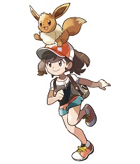

Se revelan nuevas entregas de Pokémon para Nintendo Switch y dispositivos móviles
En la noche de hoy Nintendo y The Pokémon Company llevaron a cabo un evento que llevó por nombre “Pokémon 2018 Video Game Press Conference”, en el cual se dieron a conocer varios detalles acerca de lo que se viene para la franquicia.
El primer avance de la noche fue un nuevo “Free to play” que lleva por nombre Pokémon Quest.
Un juego desarrollado por GAME FREAK para Nintendo Switch y dispositivos móviles al muy puro estilo de Pokémon Rumble, en el cual tendrás que explorar, pelear con Pokémon salvajes, crear tu propia base y preparar deliciosos platillos para atraer nuevas criaturas de bolsillo. Pokémon Quest está disponible para la consola híbrida de Nintendo desde el día de hoy 30 de Mayo del 2018; y en dispositivos móviles en el próximo mes de Junio. También durante la conferencia se dieron a conocer los dos nuevos títulos desarrollados para Nintendo Switch, cuales nombres fueron filtrados desde hace poco tiempo atrás. ¡Así es! estamos hablando de nada más y nada menos que Pokémon Let´s Go Pikachu y Pokémon Let´s Go Eevee.
Como tal, estas nuevas versiones están basadas en los primeros juegos para la Game Boy (sobre todo de Pokémon Yellow) aunque como se puede apreciar en el avance, tendrá algunas mecánicas nuevas. Empezando por lo que se había filtrado, contará con la misma característica de captura de Pokémon Go, así como los combates tradicionales que conocemos de los juegos principales de la serie. Una vez en el juego podemos realizar intercambios de nuestro Smartphone a el Nintendo Switch y viceversa.

Para concluir, tenemos un título Free to play, dos nuevas entregas y un título aún en desarrollo para el próximo año. Así que, solo nos queda esperar este nuevo comienzo. Pokémon Let´s Go Pikachu y Pokémon Let´s Go Eevee saldrán a la venta el próximo 16 de noviembre de 2018.